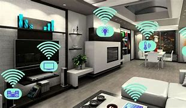
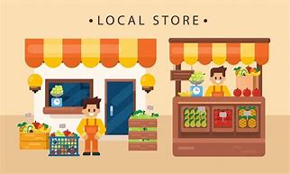
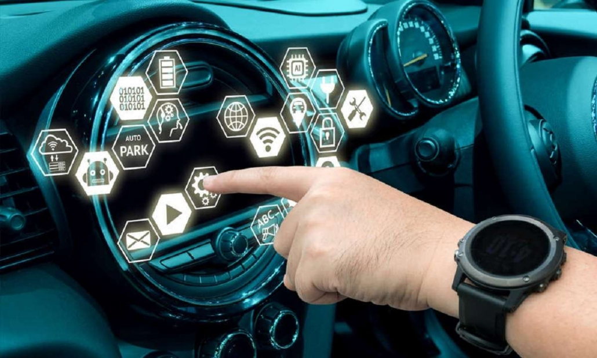
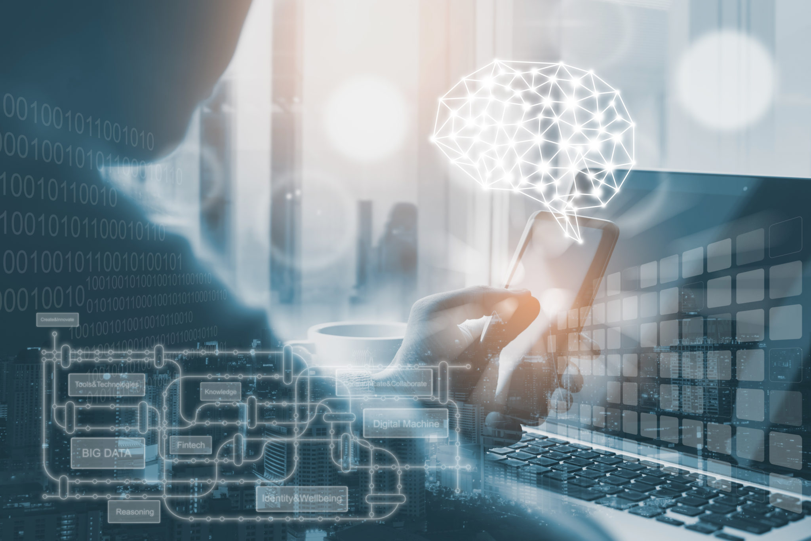

En los términos más generales, internet de las cosas incluye cualquier objeto o
"cosa" que pueda conectarse de manera inalámbrica a una red de Internet. Pero hoy en día, IoT
refiere más específicamente cosas conectadas que están equipadas con sensores, software y otras
tecnologías que les permiten transmitir y recibir datos –con el propósito de informar a los usuarios
o automatizar una acción–. Tradicionalmente, la conectividad se lograba principalmente a través de
Wi-Fi, mientras que hoy 5G y otros tipos de plataformas de red ofrecen la promesa de manejar enormes
data sets, casi en cualquier lugar, con velocidad y confiabilidad.
COMO FUNCIONA
Capture los datos A través de sensores, los dispositivos de IoT capturan datos de sus
entornos. Esto podría ser algo tan simple como la temperatura o tan complejo como un feed de
video en tiempo real.
Comparta los datos Mediante conexiones de red disponibles, los dispositivos IoT envían
estos datos a un sistema en la nube público o privado (dispositivo-sistema-dispositivo) o a otro
dispositivo (dispositivo-dispositivo), o los almacenan localmente según se indique para su
procesamiento en la periferia.
Procese los datos En este punto, el software se programa para que haga algo basado en
esos datos –como encender un ventilador o enviar una advertencia
Actúe a partir de los datos Se analizan los datos acumulados de todos los dispositivos de
una red de IoT. Esto brinda información estratégica poderosa para fundamentar acciones y
decisiones de negocio confiables.
Ejemplos de redes de IoT en acción

Hogares Inteligentes
muchas personas ya están íntimamente familiarizadas con las redes de IoT en sus propias casas.
Mediante conmutadores, sensores y dispositivos inteligentes que se comunican a través de protocolos
como Z-Wave o Zigbee, los sistemas de automatización del hogar se pueden usar para monitorear y
controlar cosas como iluminación, climatización, sistemas de seguridad, electrodomésticos, y más
–incluso desde lejos–. Si se olvida de apagar las luces o el horno antes de salir de su casa, puede
hacerlo desde su teléfono a través de dispositivos habilitados para IoT.

Comercio Minorista
las soluciones de IoT orientadas al cliente se usan cada vez más para mejorar las experiencias en la
tienda. Las cámaras inteligentes activadas por movimiento, las estanterías inteligentes, las balizas
y las tecnologías de RFID pueden ayudar a los compradores a localizar artículos a través de una app
móvil. Facilitan el compartir información de stock, e incluso envían a los clientes promociones en
contexto mientras navegan por la tienda. Y a medida que se borran los límites entre las experiencias
de compra en la tienda física y on-line, las soluciones de IoT pueden ayudar a mejorar las
experiencias del cliente haciendo un seguimiento de los vehículos de entrega y envío, lo que les
permite a los clientes personalizar mejor sus planes de compra.

Automoviles Conectados
hoy, prácticamente todos los autos nuevos salen al mercado con IoT y funcionalidad inteligente, y se
espera que la ubicuidad de los autos 5G crezca durante los próximos cinco años y más allá. Los
sistemas avanzados de asistencia a conductores (ADAS) que usan tecnología IoT ayudan a quienes
conducen a evitar colisiones, planificar rutas, entrar en espacios estrechos, y mucho más. Y a
medida que se desarrolla la IoT automotriz, vemos cada vez más conectividad con dispositivos
externos como semáforos, peatones, noticias y fuentes meteorológicas, y proveedores de
entretenimiento por streaming.
EL FUTURO DE IoT

Lo que podemos esperar en el futuro es una integración más fluida entre la tecnología y la
experiencia humana. Si bien el metaverso aún puede tardar algunos años, el audio 3D, la realidad
virtual avanzada, las sensaciones tácticas y la personalización en tiempo real potenciada por IA
significarán que nuestra interacción con los dispositivos que nos rodean, permitirá experiencias
sensoriales cada vez más "reales". Además, con el auge del 5G y la conectividad rápida ubicua a
nivel mundial, los humanos tendrán una capacidad cuántica para compartir estas experiencias a
cualquier distancia. Las implicaciones de esto son vastas y tienen el potencial de cambiar cómo
abordamos algunas de nuestras actividades e instituciones más fundamentales tales como lugares de
trabajo, atención quirúrgica y médica, bienes raíces, compras, viajes y relaciones humanas en
general.